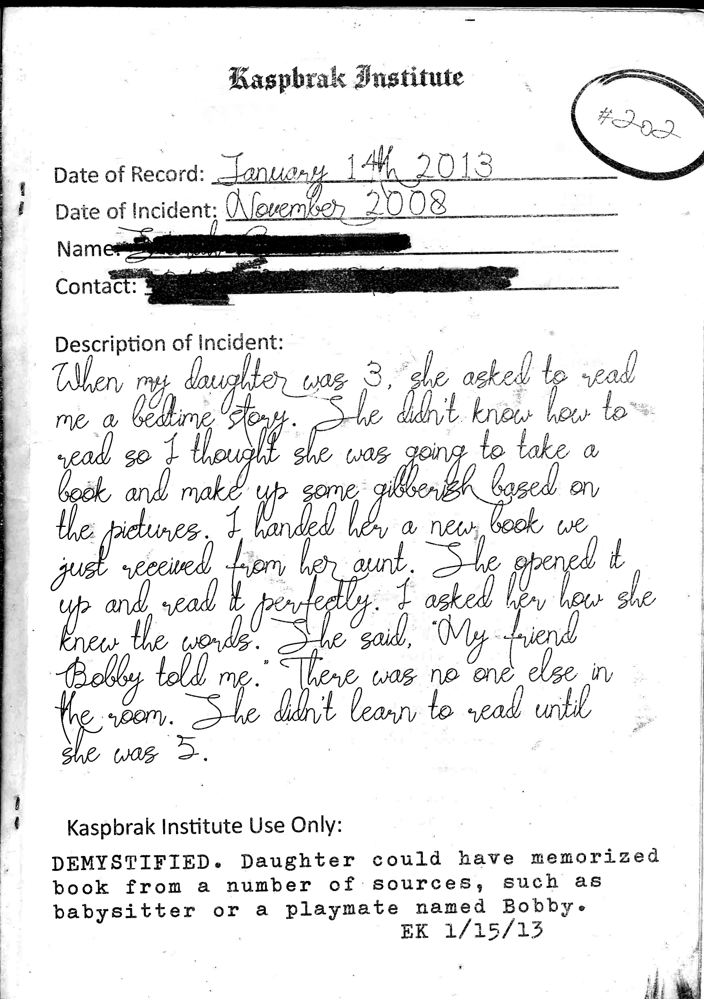

Date of Record: January 14th, 2013
Date of Incident: November 2008
Name: [REDACTED]
Contact: [REDACTED]
Description of Incident:
When my daughter was 3, she asked to read me a bedtime story. She didn’t know how to read so I thought she was going to take a book and make up some gibberish based on the pictures. I handed her a new book we just received from her aunt. She opened it up and read it perfectly. I asked her how she knew the words. She said, “My friend Bobby told me.” There was no one else in the room. She didn’t learn to read until she was 5.
Kaspbrak Institute Use Only:
DEMYSTIFIED. Daughter could have memorized book from a number of sources, such as babysitter or a playmate named Bobby.
EK 1/15/13
